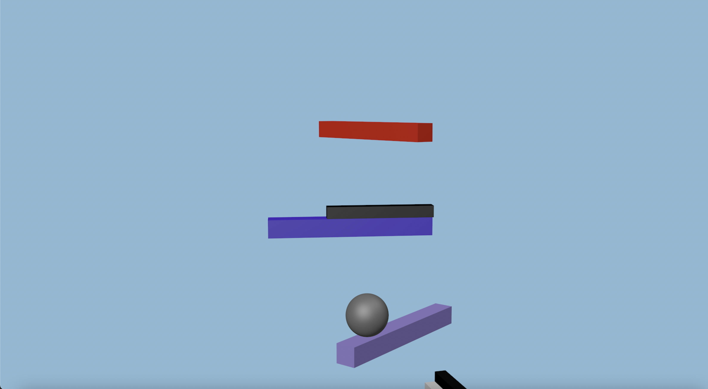
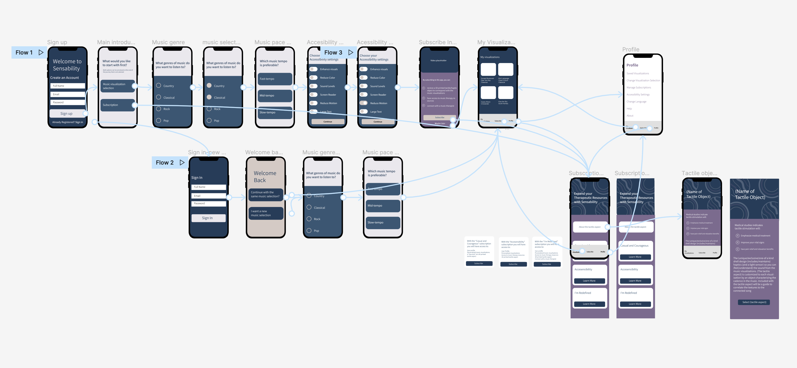
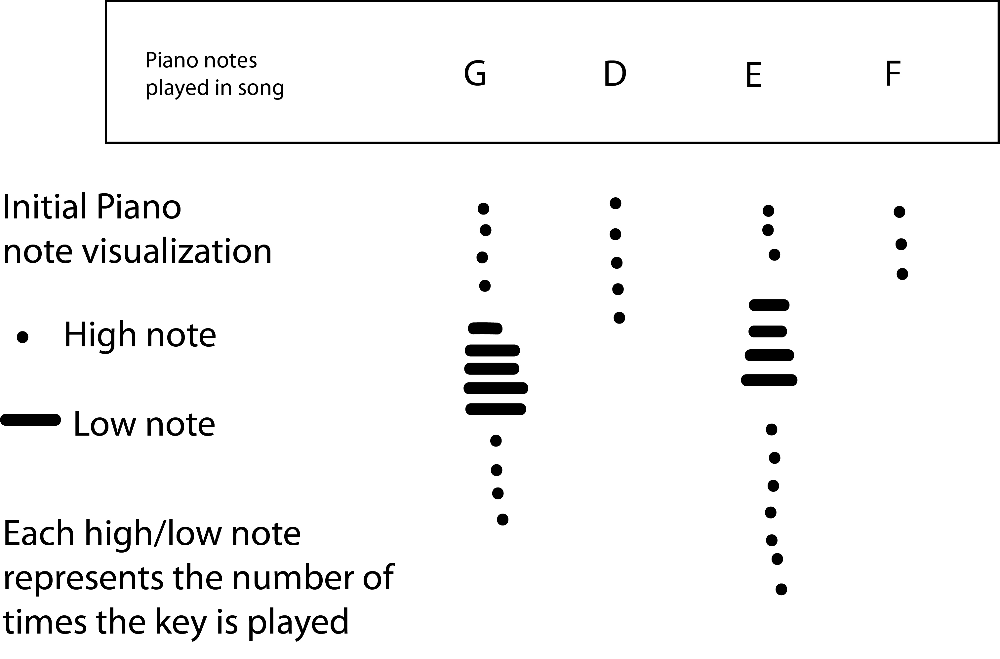
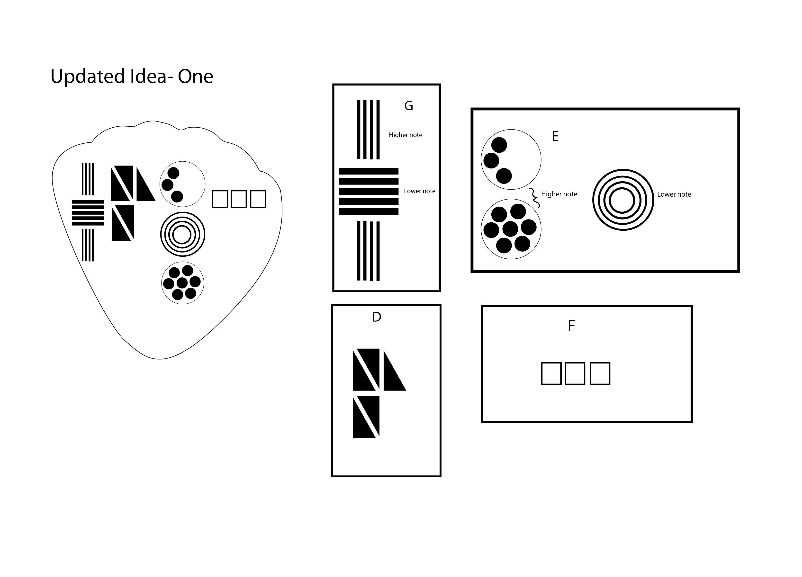

Welcome to Sensability
A music visualization experience to accomodate accessibility and music therapy audiences.
Master of Art in Graphic and Web Design Capstone Project
August 2022
If music can restore your mind, how can an accessible and music therapy approach to music combined with artistic mediums further and greatly impact individuals?
It would be wonderful for deaf and hard of hearing individuals to experience music with visuals and actual representations to connect with the message of the music and understand the instruments which are being played.
The healing powers of music has (helped/aided) individuals recover from trauma and relax before surgery. A tactile object corresponding to the music visualization could assist individuals who enjoy feeling the beat or vibration of the music, especially with instrumental music.

The prototype of this project started with an (initial) music visualization focused on connecting the visuals to the instruments in the song. After the initial prototype visualization was created, some feedback I received was:
"What is the emotion?", "With the instruments, how is it supposed to inspire me?"
The song used in this prototype is “A Peaceful Winter” by Scott Holmes from Free Music Archive. By incorporating winter scene colors and visuals in addition to the instruments, it would help viewers understand the emotion of the music, especially for some viewers watching this without sound. Additional feedback includes: “If someone does not have an idea of what the instrument is or what the notes sound like or has never heard the instrument before; and if you are going to incorporate the instruments, think about how you are going to indicate the highest and lowest string in the violin representing high or low notes.“
With designing for music therapy audiences, This app idea was inspired by a google chrome accessibility profile extension idea, I started in the Experimental Interaction course at the beginning of this project as a way to accommodate music experiences.
It develped into a personalized music visualization where users can select the music visualizations based on the music style, tempo, and if desired accessibility settings. There is a subscription aspect to this app design where users have the option to recieve a tactile aspect, have access to music therapy resources and connect with music therapists.

Medo (meadow), is the tactile aspect counterpart of the Sensability app. With Medo, users can feel sound with along with the app visualizations with the integration of haptic hardware inside the design. The song in the music visualization correlates with portraying textures on the tactile aspect representing the notes played. The purpose of the tactile aspect is to have an actual feeling of the sound of music while viewing the music visualizations for music therapy, Deaf or Hard of hearing individuals.
The suggestion of correlating portraying textures on the tactile aspect to the song in the music visualization led to an initial guide, (visualizing) the piano keys which are played along with if it was a high or low note, and how many times each key was played


Developing the tactile aspect first in Adobe Illustrator, I used the initial music guide for the tactile object and used shapes to represent the piano notation. Once this was complete, I designed the tactile aspect in Cinema 4D.
Do you want to learn more about this Capstone project?
Click the button to take a look at the Sensability Website
Link to Sensability Website
If designing for accessibility with this project can communicate music to this audience while simultaneously having therapeutic benefits, the achievement would be both deaf and hard of hearing individuals and patients finding my project useful.